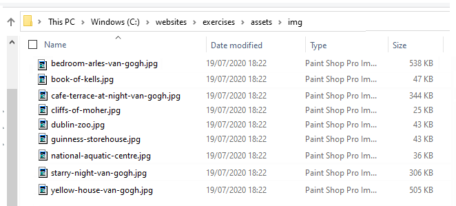

Learning Goals
At the end of this Tutorial, you will be able to:
- Insert images in a web page and add alternative text with the alt attribute
- Insert spacing beneath images, add drop shadow and rounded corner effects, and remove image backgrounds.
The finished versions of the four sample web pages you will create in this Tutorial should look as shown below.


You will also update your website home web page with an image, and with hyperlinks to your four new sample web pages.
Adding images to a web page
You add an image to a web page using the single, simple line of HTML code such as shown below.
<img src="assets/img/dog.jpg" alt="My dog Rover, playing in the park">
Or:
<img src="assets/img/cat-picture.png" alt="My cat Judy, sitting on a chair">
As you can see from the examples below, the HTML <img> tag for every image has the same format.

After the <img> tag name are the three letters of src which set the source (location and file name) of the image file. This is known as an attribute or property of the <img> tag.
Note that the <img> tag does not need a closing tag. It is one of the few examples of self-closing tags in HTML.
Images and alternative text
If, as the result of a slow connection or other reason, an image on a web page cannot be displayed, HTML offers an attribute named alt, a short form of ‘alternative text.’
In the above example, all six inserted images each include a short alternative description.
If you omit the alternative text for any image on a web page, your web page is regarded as "invalid".
Below you can see the output produced by the official W3C HTML validity checker on a web page which is missing the alt attribute from an img tag.

Downloading your sample files
Your first step is to download the files you need for this Tutorial.
- Download the following compressed file to your computer: lesson-images.zip
- Copy the ZIP file into your websites folder.
- Uncompress the ZIP file as shown below.

- The files will unzip into a new sub folder in your websites folder named lesson-images.
 Inside this new sub-folder you should see 25 files: four HTML files, four CSS files and a group of image files.
Next, you will copy these unzipped files to their appropriate sub folders.
Inside this new sub-folder you should see 25 files: four HTML files, four CSS files and a group of image files.
Next, you will copy these unzipped files to their appropriate sub folders. - From the websites/lesson-images sub-folder, copy the four HTML files to your websites/exercises sub-folder.
- From the websites/lesson-images sub-folder, copy the four CSS files to your websites/exercises/assets/css sub-folder.
- Display your websites/exercises/assets sub-folder, and inside it create a new sub-folder named img.

- To this new websites/exercises/assets/img sub-folder, copy the 17 image files from your websites/lesson-images sub-folder. 
- You no longer need the downloaded lesson-images.zip file or the websites/lesson-images sub-folder. You can delete them both.

- In your web browser, display these four web pages:
page-4.html
page-5.html
page-6.html
page-7.html
You are now ready to work with the sample files you have downloaded.
Working with the van Gogh web page
In this section, you will work with the sample page-4.html web page, the sample style-4.css stylesheet and four images.
- In Visual Studio Code, open the following two files:
page-4.html
style-4.css - After the paragraph under the heading “The Arles Years”, type the following code:
 Or, just copy-and-paste the following:
Or, just copy-and-paste the following:
<img src="assets/img/bedroom-arles-van-gogh.jpg" alt="Bedroom in Arles, van Gogh">
- Next, add the following three images in the locations shown.

<img src="assets/img/yellow-house-van-gogh.jpg" alt="The Yellow House, van Gogh">

<img src="assets/img/cafe-terrace-at-night-van-gogh.jpg" alt="The Cafe Terrace at Night, van Gogh">

<img src="assets/img/starry-night-van-gogh.jpg" alt="Starry Night, van Gogh">
- When finished, save your page-4.html file and view it in your web browser.
Adding a drop shadow effect
To give the images on your web page a drop shadow effect, add the following at the end of your style-4.css stylesheet.

This will also add a vertical bottom margin of 42 pixels under each image.
Save your CSS file and view the effect on your page-4.html web page in your browser.
In VS Code, you can now close your page-4.html and style-4.css files.
Working with the Tourism web page
In this section, you will work with the sample page-5.html web page, the sample style-5.css stylesheet and five images.
- In Visual Studio Code, open the following two files:
page-5.html
style-5.css - Directly under the sub-heading “Guinness Storehouse, Dublin”, type the following code:
 Or, just copy-and-paste the following:
Or, just copy-and-paste the following:
<img src="assets/img/guinness-storehouse.jpg" alt="Guinness Storehouse">
- Next, add the following four images to your HTML file in the locations shown.


- When finished, save your page-5.html file and view it in your web browser.
Adding a rounded corner effect
To give the images on your web page a rounded corner effect, add the following at the end of your style-5.css stylesheet.

This will also add a vertical bottom margin of 32 pixels under each image.
Save your CSS file and view the effect on your page-5.html web page in your browser.
In VS Code, you can now close your page-5.html and style-5.css files.
Working with the Smoothies web page
In this section, you will work with the sample page-6.html web page, the sample style-6.css stylesheet and four images.
- In Visual Studio Code, open the following two files:
page-6.html
style-6.css - After the paragraph under the heading “Smooth Smoothies”, type the following line to add an image named “watermelon.png”:
 Or, just copy-and-paste the following:
Or, just copy-and-paste the following:
<img src="assets/img/watermelon.png" alt="Watermelon Wonder">
- Next, add the following three further images to your HTML file at the locations shown.


- When finished, save your page-6.html file and view it in your web browser.
Removing an image background
You will see that the lemons.png image does not have a transparent background. Follow these steps to make the background of the image transparent.
- Open a new tab in your web browser and go to this web address: remove.bg
- Click the Upload image button, and upload your lemons.png image file.

- When the operation is finished, click the Download button.

- Your downloaded file will have a modified name such as: lemons-removebg-preview.png
- Copy this file to your websites folder, and add it to your web page to replace the original file which had a non-transparent, white background.
Save your web page and view the result in your browser.
In VS Code, you can now close your page-6.html and style-6.css files.
Working with the Software web page
In this section, you will work with the sample page-7.html web page, the sample style-7.css stylesheet and four images.
- In Visual Studio Code, open the following two files:
page-7.html
style-7.css - At the very top of the web page, just after the opening <body> tag, type the following line to add a new image named “visual-data.png”:
 Or, just copy-and-paste the following:
Or, just copy-and-paste the following:
<img src="assets/img/visual-data.png" alt="Dorset Analytics product">
- Next, add the following three more images to your HTML file at the locations shown.


- When finished, save your page-7.html file and view it in your web browser.
In VS Code, you can now close your page-7.html and style-7.css files.
Embedding a YouTube Video
Your next task ia to embed a video from YouTube into your page-4.html web page.
- In the page-4.html, scroll down to just after the h1 heading and press the Enter key a few times to open up some blank lines.

- Next, click the link below to open a new web browser tab that displays a video on the YouTube website. Vincent van Gogh: The Humble Genius
- Under the video, click the option named SHARE.

- From the choices now displayed, choose Embed.

- From the pop-up box, click the Copy button.
 You can now close the YouTube web browser tab.
You can now close the YouTube web browser tab. - Return to VS Code and the index.html file.
- Paste the copied YouTube embed code into your web page.

- In your web browser, reload and view your index.html web page. It may take a few seconds for the embedded video to load, depending on the speed of your Internet connection.
Making the video responsive
The problem with embedding YouTube videos directly is that they are positioned in an iframe container. You cannot make an iframe responsive. A fixed width and height need to be set for it.
Follow these steps to make the embedded video scale according to the width of the user’s screen.
- In your index.html file, ‘wrap’ the Youtube video code in a new container as follows:
<div class="video-container"> <iframe src="https://www.youtube.com/embed/wI2i5ca1RT4" frameborder="0" allow="accelerometer; autoplay; encrypted-media; gyroscope; picture-in-picture" allowfullscreen></iframe> </div>
- In VS Code, switch to the van-gogh.css stylesheet.
- At the bottom of the stylesheet, copy-and-paste the following.
.video-container { position: relative; width: 100%; aspect-ratio: 16 / 9; margin-bottom: 32px; } .video-container iframe { position: absolute; width: 100%; height: 100%; }
- In your web browser, reload and view your index.html web page on desktop/laptop and mobile screens.
Updating your website home page
Now that you have created and styled four new web pages, let’s add hyperlinks to these new pages to the ‘home page’ of your web site.
Updating your home page content
Follow the steps below:
- In Visual Studio Code, open this HTML file in your websites folder:
index.html
Its content should look as follows:

- Copy-and-paste the following new lines to your web page, directly under the line that contains the link to the page-3.html web page.
<p><a href="exercises/page-4.html">Vincent van Gogh</a></p> <p><a href="exercises/page-5.html">Irish Tourism</a></p> <p><a href="exercises/page-6.html">Smoothies</a></p> <p><a href="exercises/page-7.html">Software Analytics</a></p>
- The <body> of your edited home page should now look similar to that below.

Save your index.html web page and view the result in your browser.
Adding an image to your home page
Before adding images to the pages of your personal website, you need to create a sub-folder to store them.
For Microsoft Windows 11 users, here are the steps:
- Open File Explorer, display your üìÅ websites/assets sub-folder.
- In the blank space at the right side, right-click and choose New | New folder from the context menu.

- Give your new sub-folder the name img.


DO NOT type upper-case letters. Type img.
DO NOT type 'Img' or 'IMG'.

✅ That’s it. The assets sub-folder of your 'main' websites folder now has two sub-folders: one for stylesheets and one for images.
Now, you can add one or more images to the home page of your website.
- In VS Code, open your home page index.html file.
- In your web browser, select and download a suitable image from the range of copyright-free, stock photography websites.
- Copy your selected image from your Downloads folder to your assets/img sub-folder.
- In VS Code, add the image to your index.html web page. In the img tag, don’t forget to include the alt attribute with some descriptive text.
- Save your web page and view it in your web browser.
✅ Another task complete.
Uploading your files to Github
You are now ready to upload your work to your account on Github.
- Open a new tab in your web browser and go to Github.com. If you are not already signed in to your Github account, sign in now.

- On your Github home page, click the ‘repo’ that holds your web pages. Its name will look as follows, where username is your chosen username on Github.
username.github.io

- On the next Github screen displayed, near the right of the screen, you can see a button named Add file. Click on it.

- From the dropdown list displayed, choose the option Upload files.

- In File Explorer (Windows 11) or Finder (Apple Mac), drag-and-drop your üìÑ index.html file and your üìÅ assets and üìÅ exercises sub-folders to upload them to your repository on Github.

- Scroll down to the bottom of the Github screen, and accept or edit the short message (Add files via upload) in the Commit changes box.
- Finally, click the green Commit changes button to upload your files.

Your updated home page and four new web pages are now published on Github at web addresses similar to the following:
https://username.github.io/index.html
https://username.github.io/exercises/page-4.html
https://username.github.io/exercises/page-5.html
https://username.github.io/exercises/page-6.html
https://username.github.io/exercises/page-7.html
It may take a few minutes for your uploaded files to appear on Github.